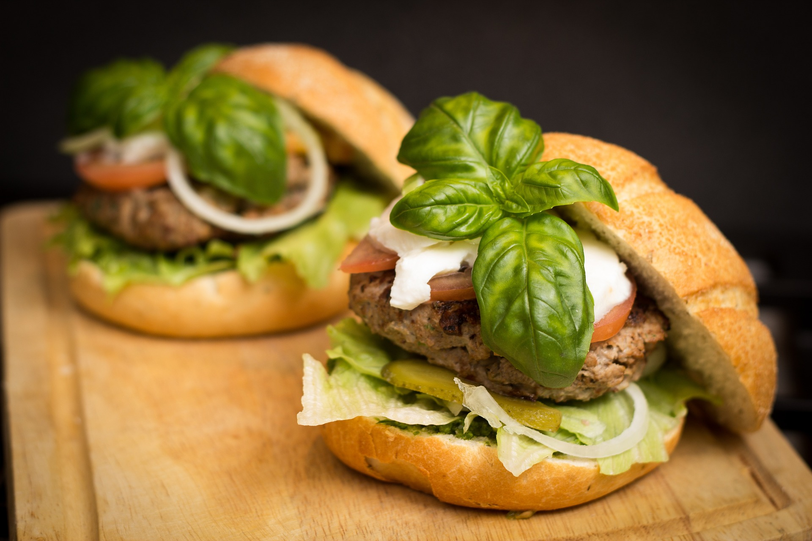

Experiencias de gastronomía
Nuestros cocineros os ofrecerán una cata de algunas de nuestras mejores hamburguesas y cervezas.
- Se acompañará con la música en vivo de bandas locales que os harán viajar a través de la historia de la música.
- Un baile de sonidos que os harán disfrutar.
¡Genuino, vibrante, sabroso!
